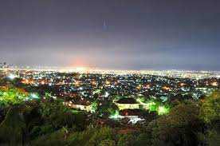
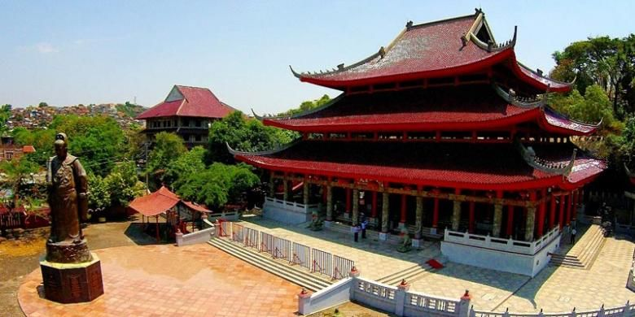

Jejak peninggalan kolonial di Semarang dapat dijumpai di kawasan Kota Lama yang terletak di Jalan Letjen Suprapto, Tanjung Mas, Kecamatan Semarang Utara, Kota Semarang. Berkunjung ke Kota Lama serasa di luar negeri. Bagunan di sana dibangun dengan nuansa Eropa yang pas dijadikan lokasi foto.
Jejak peninggalan kolonial di Semarang dapat dijumpai di kawasan Kota Lama yang terletak di Jalan Letjen Suprapto, Tanjung Mas, Kecamatan Semarang Utara, Kota Semarang. Berkunjung ke Kota Lama serasa di luar negeri. Bagunan di sana dibangun dengan nuansa Eropa yang pas dijadikan lokasi foto.

Bukit Gombel disebut sebagai tanah tertinggi di Semarang karena menjadi sebagai tempat berdirinya menara pemancar radio, televisi, dan telekomunikasi. Bukit ini menawarkan panorama indah dari hamparan bintang yang berkilau di langit, juga cahaya lampu kota pada malam hari

Klenteng ini biasanya menjadi tempat digelarnya festival, seperti peringatan HUT Sam Poo Kong dan hari raya Imlek. Harga tiket pada hari biasa adalah Rp 8.000 per orang dewasa dan Rp 5.000 per anak. Saat akhir pekan, harga tiket masuk adalah Rp 12.000 per orang dewasa dan Rp 8.000 per anak. Tiket masuk hanya untuk area area wisata, untuk memasuki area ibadah pengunjung akan dikenai biaya tambahan.
Pantai Tirang menawarkan pemandangan alam yang indah dan asri. Pasir pantainya lembut, pemandangan matahari terbenam juga memesona. Lokasi pantai tak jauh dari Bandara Ahmad Yani, tepatnya di Desa Tambakrejo, Tugurejo, Tugu, Kota Semarang.
 Lawang Sewu merupakan salah satu tempat wisata favorit yang terletak di Jalan Pemuda, Sekayu, Kecamatan Semarang Tengah, Kota Semarang. Lawang Sewu didirikan pada 27 Februari 1904. Dulunya, tempat ini disebut Het Hoofdkantoor van de Nederlandsch-Indische Spoorweg Maatscappij. Lawang Sewu memiliki arti seribu pintu. Namun jumlah sebenarnya hanya 928 pintu dengan 425 frame dan 114 ruang kerja, tidak termasuk ruang meeting.
Lawang Sewu merupakan salah satu tempat wisata favorit yang terletak di Jalan Pemuda, Sekayu, Kecamatan Semarang Tengah, Kota Semarang. Lawang Sewu didirikan pada 27 Februari 1904. Dulunya, tempat ini disebut Het Hoofdkantoor van de Nederlandsch-Indische Spoorweg Maatscappij. Lawang Sewu memiliki arti seribu pintu. Namun jumlah sebenarnya hanya 928 pintu dengan 425 frame dan 114 ruang kerja, tidak termasuk ruang meeting.